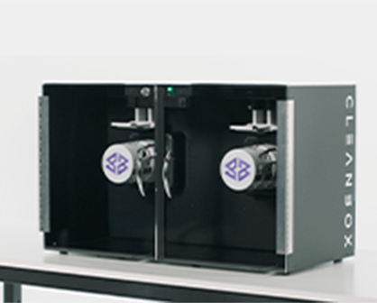

Lab Safety, Policies, and FAQ
Lab Safety
The MA{VR}X Lab should be a fun, educational, and inspiring experience for everyone. Here’s how we make sure that happens.
We are taking the following precautions to prioritize the health of everyone involved, both lab staff and participants:
Please note: appointments are required for all in-person MA{VR}X Lab activities, events, and experiences unless otherwise specified!
Due to COVID-19, the MA{VR}X Lab–while encouraging participation and free use–is open only by appointment and for a limited number of simultaneous users. Contact MAVRX-Lab@arizona.edu to schedule time or equipment rental.
The lab is large enough that social distancing can be maintained to the degree required by the university. However, masks are required at all times in the lab when social distancing cannot be observed. Those using headsets will be provided disposable mask guards to use and equipment is sanitized in a UV-C Cleanbox CX2 between uses.
Policies
To ensure safe and equitable use of the lab, the following policies and disclaimers must be acknowledged and followed.
Lab Rules
The following rules apply to the lab, both physically and virtually.
- General use of the MA{VR}X Lab is available free of charge for all University of Arizona community members.
- All equipment usage must be scheduled and booked ahead of time. Walk-ins, while permitted, do not take priority over scheduled events or activities.
- Ask the lab staff if you wish to move any tables, equipment, cables, and so on.
- No food or open drink containers allowed in the lab.
- Copyright infringement is prohibited.
- Bringing your own equipment is permitted and encouraged.
- Any software installed on lab equipment requires staff approval.
- All University of Arizona Code of Conduct policies also apply within the lab.
Safety Disclaimer
All participants involved in MA{VR}X Lab activities are required to acknowledge the following safety disclaimer.
Please be aware that using a virtual reality headset (such as the HTC Vive or Oculus Rift) may cause dizziness, headaches, disorientation, and seizures. Individuals who are prone to motion sickness may experience discomfort when using a virtual reality headset, as some experiences involve varying degrees of movement and motion.
Should you experience any of the above symptoms or begin to feel uncomfortable with completing a virtual reality experience, remove the headset immediately and one of the lab or other staff members will assist you.
Due to the immersive nature of virtual reality, it is also possible to lose awareness of your surroundings while engaged in an experience. Because of this, when wearing the headset please be cautious of other people, equipment, and/or miscellaneous items that may be within your immediate surroundings to avoid any unnecessary bodily injuries or damage to equipment.
FAQ
Where is the MA{VR}X Lab?
Two places! The primary lab is located in the College of Applied Science and Technology on the University of Arizona Sierra Vista campus.
You can also find a satellite lab on the Yuma campus.
What are the lab’s hours of operation?
Due to the varying projects ongoing that the lab is involved in, time is available only via appointment. Please contact MAVRX-Lab@arizona.edu to schedule time to work in the lab or book equipment.
What equipment does the lab have?
You can see a running list of the available hardware, software, and games on the Lab Resources page.